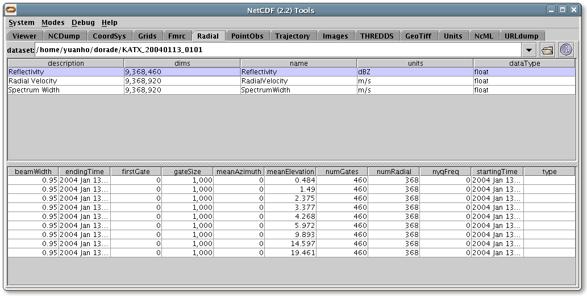

Radial Datatype uses polar coordinates (elevation, azimuth, distance) to describe the location of its points in space, and it is referred as Radial Coordinate System. A Radial Coordinate System has a Elevation, Azimuth, and Distance coordinate axis. It may also has a Time coordinate axis. Generally, in our level II and level III radar products, there is a time variable at radial (elevation, azimuth), or sweep (elevation) level, so it is considered as a variable, rather than coordinate axis.
A RadialDatasetSweep has a collection of Radial Variables. The data in each Variable is organized into sweeps. A sweep is a connected set of radials. All the radials in a sweep are assumed to have the same number of gates and the same beam width and nyquist frequency. A radial is a set of data sampled along a straight line at constant intervals called the gate size. The radial's geometry is described by an elevation and azimuth angles relative to some origin.
A RadialDatasetSweep is a NetcdfDataset whose Radials have been identified and grouped into Sweeps based on Radial Coordinate Systems. Here is the UML for the RadialDatasetSweep interface classes, found in the ucar.nc2.dt package:
ucar.nc2.dt.RadialDatasetSweep
is an interface, we use the concrete class from the package
RadialDatasetSweep rds = (RadialDatasetSweep) TypedDatasetFactory.open(thredds.catalog.DataType.RADIAL, fileIn, null, new StringBuffer())
A TypedDatasetFactory
wraps three RadialDatasetSweep classes: ucar.nc2.dt.radial.Nids2Dataset,
ucar.nc2.dt.radial.LevelII2Dataset, and ucar.nc2.dt.radial.Dorade2Dataset.
It opens a radial dataset with an appropriate class, and can be
extended to cover more radial products.
If
the radar is stationary, isStationary() returns true, and getCommonOrigin()
returns the earth location of radar. If the radar product has more
than one sweep, isVolume() will return 1. The getDataVariables
returns the list of variables, for each variable, getNumSweeps(),
getSweep(int sweepNum), and readAllData() is used to
handle the data variable at the sweep level, inside each sweep, getRadialNumber(),
getGateNumber(),
getElevation(int
radial), getTime(int radial), and readData(int radial)
returns all information associated with the radial object.
/* radar information */
String
stationID = rds.getRadarID();
String stationName = rds.getRadarName();
boolean isVolume = rds.isVolume();
/* radial variable */
RadialDatasetSweep.RadialVariable varRef =
rds.getDataVariable("Reflectivity");
List rvars = rds.getDataVariables();
Iterator iter
= rvars.iterator();
/* information at sweep level */
RadialDatasetSweep.Sweep
sw = varRef.getSweep(i);
float me
= sw.getMeanElevation();
int nrays
= sw.getRadialNumber();
/* data variable at radial level */
for (int j
= 0; j < nrays; j++) {
float azi = sw.getAzimuth(j);
int ngates = sw.getGateNumber();
float ele = sw.getElevation(i);
float [] d = sw.readData(i);
}
You can use ToolsUI Radial Tab to view Radial Datasets. This consists of 2 tables that show the Radial DataTypes, and information of 9 radial sweeps associated with the radial variable Reflectivity.
You can also use ToolsUI NCDump Tab to view the
netCDF structure of a Radial Dataset.
and volume image of Reflectivity which is composed of 9 elevation
sweeps: